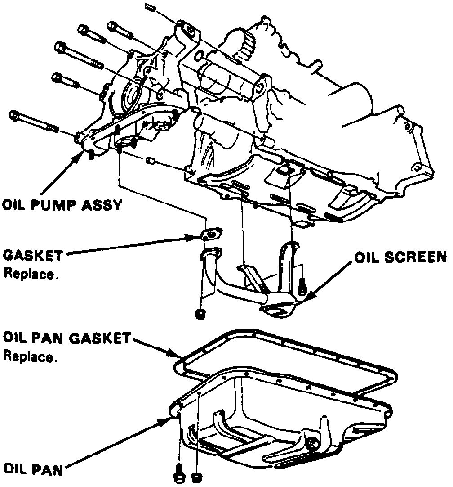
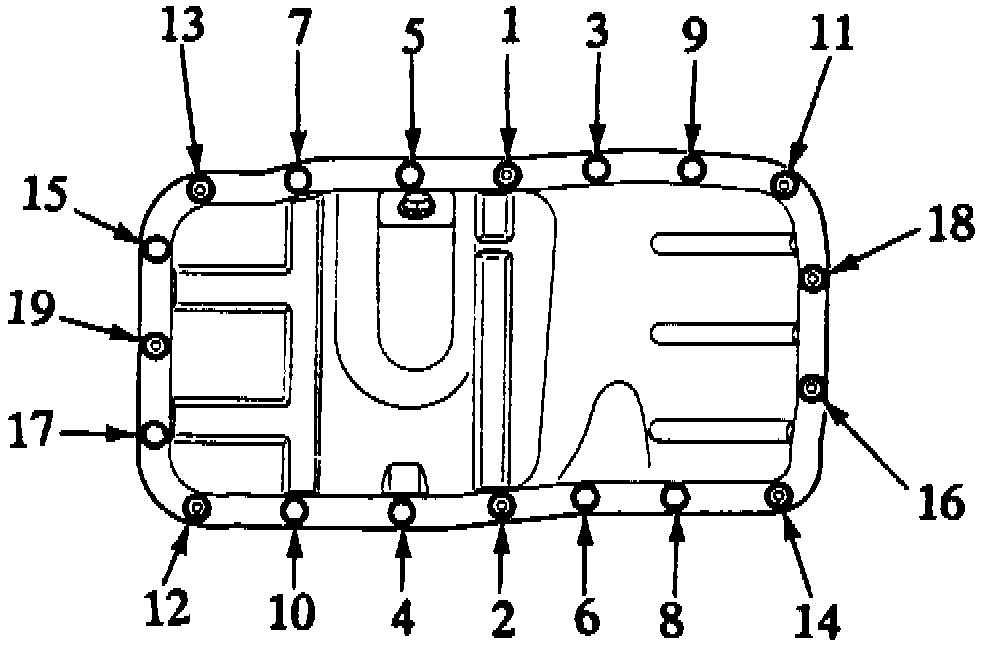

Oil Pump: Service and Repair
REMOVALFig. 88 Oil Pump Replacement:

1. Remove oil pan. Refer to Oil Pan, Engine for procedures.
2. Remove oil screen, then the oil pump attaching bolts and oil pump, Fig. 88.
INSTALLATION
1. Assemble oil pump in the reverse order of disassembly. Apply suitable locking compound to pump housing screws prior to installation.
2. Ensure oil pump rotates freely.
3. Apply clean engine oil to seal lip, then install dowel pins and new O-ring on cylinder block.
4. Ensure mating surfaces are clean and dry, then apply suitable sealant to cylinder block mating surface.
5. Apply suitable sealant to inner threads of bolt holes, then install oil pump. Torque attaching bolts to specifications, Fig. 81 and 82.
6. Install oil pump screen and torque attaching bolts to specifications.
Fig. 89 Oil Pan Bolt Tightening Sequence:

7. Tighten oil pan bolts in sequence, Fig. 89, to specifications.
8. Do not fill engine with oil for at least 30 minutes after assembly.